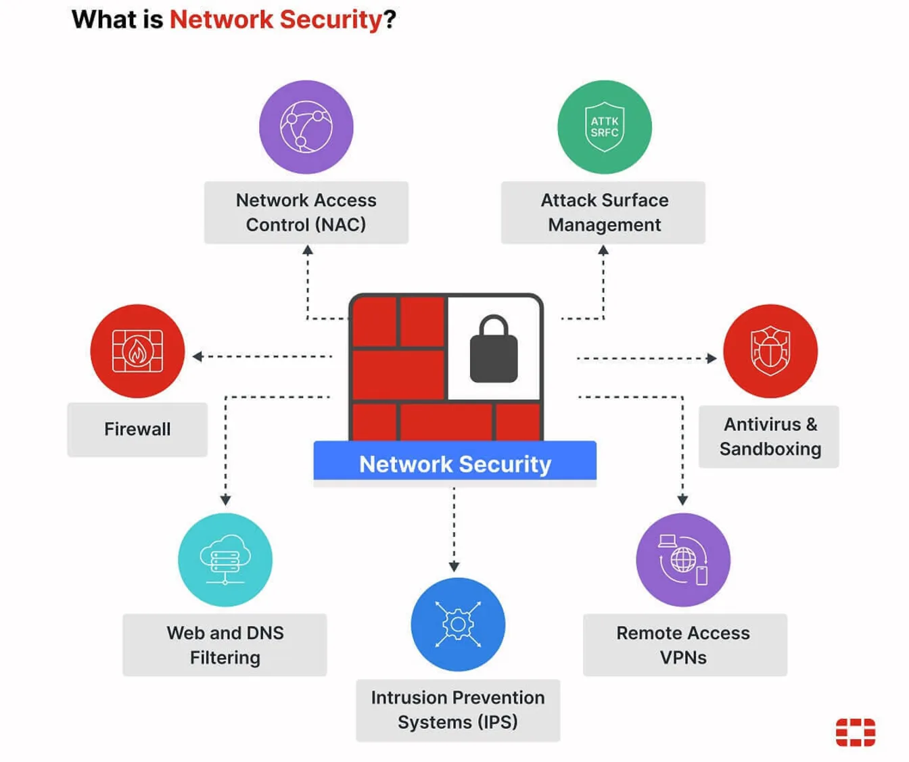

As an M365 Solution Architect, you need to understand how IT security (Intune + device compliance), information security (Purview + data governance), and cybersecurity (Defender XDR + Conditional Access) work together in your Microsoft 365 environment. With data breach costs averaging $4.44M and human elements present in 68% of incidents, implementing integrated Zero Trust controls across Entra ID, Defender, and Purview delivers measurable ROI. This guide maps NIST CSF 2.0 to your M365 stack with practical implementation steps.
In the Microsoft 365 ecosystem, the lines between IT security, information security, and cybersecurity blur — but understanding their distinct roles is crucial for building comprehensive Zero Trust architectures. Whether you're implementing Conditional Access baseline policies, configuring Defender XDR playbooks, or establishing data governance with Purview, each security domain requires specific Microsoft 365 services and configurations. This guide will help you navigate these domains with practical, M365-native solutions that your organization can implement today.
The Three Pillars in Your M365 Environment
IT Security: Your Microsoft 365 Infrastructure Foundation
In the M365 world, IT security centers on device management, identity infrastructure, and service configuration. This is where Intune, Entra ID, and your hybrid connectivity components create the technical foundation for everything else.

Core M365 Services:
- Microsoft Intune: Device compliance policies, security baselines, app protection
- Entra ID: Identity governance, authentication methods, directory synchronization
- Exchange Online Protection: Anti-spam, anti-malware, safe attachments
- Global Secure Access: Private and internet access for hybrid scenarios
Practical Implementation: Your IT security foundation starts with Intune device compliance policies that enforce Windows security baselines, require BitLocker encryption, and validate device health attestation. Combine this with Entra ID authentication strength policies that mandate Windows Hello for Business or FIDO2 keys for privileged accounts. For hybrid environments, Global Secure Access with Kerberos trust enables Entra-joined devices to securely access on-premises applications without traditional VPN complexity.
Information Security: Microsoft Purview and Data Governance
Information security in M365 revolves around data discovery, classification, protection, and governance across your entire Microsoft 365 tenant and connected systems.
Core M365 Services:
- Microsoft Purview Data Map: Automated data discovery and classification
- Purview Information Protection: Sensitivity labels, DLP policies, encryption
- Purview Insider Risk Management: Behavioral analytics and risk detection
- Purview eDiscovery: Legal hold, content search, and compliance workflows
- Entra ID Governance: Access reviews, entitlement management, lifecycle workflows
Practical Implementation: Start with Purview’s auto-labeling policies to classify sensitive data across SharePoint, OneDrive, and Exchange. Implement DLP policies that prevent sharing of credit card numbers or social security numbers outside your organization. Use Insider Risk Management to detect unusual file access patterns or potential data exfiltration. Establish regular access reviews in Entra ID Governance to ensure users maintain appropriate permissions to sensitive SharePoint sites and Teams.
Cybersecurity: Microsoft Defender and Threat Protection
Cybersecurity in M365 focuses on threat detection, investigation, and response across your entire digital estate, from endpoints to cloud applications.
Core M365 Services:
- Microsoft Defender XDR: Unified threat detection across endpoints, identity, email, and apps
- Defender for Cloud Apps: Cloud application security and shadow IT discovery
- Microsoft Sentinel: SIEM/SOAR for advanced threat hunting and automation
- Entra ID Protection: Risk-based authentication and user risk detection
Practical Implementation: Configure Defender for Endpoint with attack surface reduction rules and controlled folder access. Set up Defender for Office 365 with Safe Links and Safe Attachments for all users. Implement Defender for Cloud Apps to monitor OAuth app permissions and detect anomalous user behavior. Use Sentinel workbooks to correlate security events across your M365 environment and automate incident response with Logic Apps.
Security Domains Comparison: M365 Edition
| Feature | IT Security (M365) | Information Security (M365) | Cybersecurity (M365) |
|---|---|---|---|
| Primary Services | Intune, Entra ID, Global Secure Access | Purview (Data Map, DLP, Insider Risk), Entra ID Governance | Defender XDR, Sentinel, Entra ID Protection |
| Key Policies | Device compliance, Conditional Access, Security baselines | Sensitivity labels, DLP rules, Retention policies | Attack surface reduction, Safe Links/Attachments, Risk policies |
| Monitoring Focus | Device health, Authentication events, Service availability | Data access patterns, Classification coverage, Policy violations | Security alerts, Threat indicators, User risk scores |
| Compliance Integration | Device attestation, Authentication strength | Data residency, Legal hold, Privacy regulations | Incident reporting, Threat intelligence, Security metrics |
Framework Integration: The NIST CSF 2.0 Foundation
NIST CSF 2.0 formalizes six functions—Govern, Identify, Protect, Detect, Respond, Recover—and is the best backbone for integrating IT security, information security, and cybersecurity. In the Microsoft 365 context, this framework provides the structure for orchestrating Intune, Purview, and Defender services into a cohesive security strategy.
Govern & Identify
Microsoft Purview Suite:
- Data Map: Automated discovery of sensitive data across M365 and connected sources
- Information Protection: Sensitivity labeling and classification policies
- Insider Risk Management: Behavioral analytics for insider threat detection
- eDiscovery: Content search and legal hold capabilities
Entra ID Governance:
- Access Reviews: Regular certification of user permissions and group memberships
- Entitlement Management: Automated access provisioning and lifecycle management
- Privileged Identity Management (PIM): Just-in-time access for administrative roles
Protect
Device and Identity Protection:
- Intune Compliance Policies: Enforce security baselines, encryption, and device health
- Conditional Access: Token protection, location-based access, device compliance requirements
- Authentication Strength: Windows Hello for Business, FIDO2 keys, and phishing-resistant MFA
Zero Trust Implementation: Deploy these five baseline Conditional Access policies for immediate risk reduction:
- Admin MFA Enforcement: Require phishing-resistant authentication for all administrative roles
- Legacy Authentication Block: Block basic authentication protocols across all M365 services
- Risk-Based Step-Up: Require additional authentication for high-risk sign-ins
- Device Compliance Gate: Require compliant devices for Exchange Online and SharePoint access
- Session Controls: Implement app-enforced restrictions for unmanaged devices
Detect & Respond
Microsoft Defender XDR:
- Defender for Endpoint: Advanced threat protection and endpoint detection/response
- Defender for Identity: On-premises Active Directory threat detection
- Defender for Office 365: Email and collaboration threat protection
- Defender for Cloud Apps: Cloud application security posture management
Microsoft Sentinel:
- SIEM Capabilities: Centralized log collection and threat hunting across M365 and hybrid environments
- SOAR Automation: Automated incident response and threat remediation workflows
- Threat Intelligence: Integration with Microsoft’s global threat intelligence network
Recover
Business Continuity:
- M365 Backup Policies: Automated backup for Exchange Online, SharePoint, and OneDrive
- Exchange Online Protection: Anti-malware scanning and quarantine capabilities
- Immutable Retention: Litigation hold and compliance-driven data preservation
- Incident Response: Tested runbooks and tabletop exercises using M365 security tools
Zero Trust in Practice: Conditional Access Deep Dive
Policy 1: Admin MFA Enforcement
Users: All administrative roles (Global Admin, Security Admin, etc.)
Conditions: All cloud apps, any location
Controls: Require authentication strength (Phishing-resistant MFA)
Impact: High security, minimal user friction for admins already using modern authPolicy 2: Legacy Authentication Block
Users: All users
Conditions: Exchange ActiveSync, IMAP, POP, SMTP AUTH
Controls: Block access
Impact: Eliminates 99% of password spray attacks, requires modern mail clientsPolicy 3: Risk-Based Step-Up
Users: All users
Conditions: Sign-in risk medium or high
Controls: Require MFA and password change
Impact: Adaptive protection based on Microsoft's threat intelligencePolicy 4: Device Compliance Gate
Users: All users
Conditions: Exchange Online, SharePoint Online
Controls: Require device to be marked as compliant
Impact: Ensures corporate data access only from managed, secure devicesPolicy 5: Session Controls for Unmanaged Devices
Users: All users
Conditions: Unmanaged devices
Controls: Use app enforced restrictions, block downloads
Impact: Enables BYOD scenarios while protecting corporate dataIndustry-Specific M365 Implementations
Financial Services
Regulatory Focus: SOX, PCI DSS, FFIEC guidelines
- Purview Communication Compliance: Monitor trader communications for regulatory violations
- Customer Lockbox: Ensure Microsoft support access requires explicit approval
- Advanced eDiscovery: Meet legal discovery requirements with AI-powered content analysis
- Defender for Cloud Apps: Monitor third-party financial applications for anomalous access
Healthcare
Regulatory Focus: HIPAA, HITECH, state privacy laws
- Purview Information Protection: Auto-classify PHI with medical entity recognition
- Defender for Office 365: Protect against healthcare-targeted phishing campaigns
- Entra ID Governance: Implement break-glass access for emergency medical scenarios
- Microsoft Sentinel: Correlate security events with patient access patterns
Manufacturing
Operational Focus: Intellectual property protection, supply chain security
- Purview Insider Risk: Detect potential IP theft before employee departures
- Defender for IoT: Extend protection to operational technology environments
- Global Secure Access: Secure remote access to manufacturing execution systems
- Information Barriers: Prevent collaboration between competing project teams
Measuring Success: M365 Security Metrics
IT Security KPIs
- Device Compliance Rate: Target 98% of devices meeting security baselines
- Authentication Success Rate: Monitor for authentication failures indicating attacks
- Conditional Access Policy Coverage: Ensure 100% of users covered by baseline policies
Information Security KPIs
- Data Classification Coverage: Target 90% of sensitive data properly labeled
- DLP Policy Effectiveness: Monitor policy matches and false positive rates
- Access Review Completion: Maintain 95% completion rate for quarterly reviews
Cybersecurity KPIs
- Defender XDR Alert Volume: Track trends in security alerts and investigation time
- Threat Hunting Efficiency: Measure time from detection to containment
- Security Score Improvement: Use Microsoft Secure Score as a baseline metric
The Business Case: M365 Security ROI
The Human Factor Reality
The human element remains the dominant factor: ~68% of breaches involve people (e.g., phishing, stolen creds, errors), per Verizon’s 2024 Data Breach Investigations Report. Build training and controls around the exact behaviors driving incidents in your environment. In M365, this means implementing Conditional Access policies that adapt to user risk, Purview Insider Risk Management to detect anomalous behavior, and comprehensive security awareness training integrated with Attack Simulation Training in Defender for Office 365.
Cost Avoidance
According to IBM’s 2025 Cost of a Data Breach Report, the global average breach cost is $4.44M, a 9% decrease from 2024, largely due to faster detection and containment.
- Breach Prevention: Average $4.44M cost avoidance per prevented breach
- Compliance Automation: 60-80% reduction in manual compliance tasks through Purview
- VPN Replacement: $50-100 per user per month savings with Global Secure Access
Operational Efficiency
- Unified Management: Single pane of glass for security across M365 services
- Automated Response: 70% reduction in security incident response time with Defender XDR
- Self-Service Access: Reduced helpdesk tickets through Entra ID self-service capabilities
Conclusion: Your M365 Security Journey
The distinction between IT security, information security, and cybersecurity becomes actionable when mapped to your Microsoft 365 environment. By leveraging Intune for device management, Purview for data governance, and Defender for threat protection, you create a comprehensive Zero Trust architecture that addresses all three security domains.
The market reality underscores this urgency: the cybersecurity market is projected to grow from $218.98B (2025) to $562.77B (2032) at 14.4% CAGR (Fortune Business Insights). Meanwhile, global cybercrime costs are projected to reach $13.82T by 2028 (Statista Market Insights).
Start with the five baseline Conditional Access policies outlined above, implement Purview data classification for your most sensitive information, and configure Defender XDR for unified threat detection. Remember that security in M365 is not about individual products—it’s about orchestrating these services into a cohesive defense strategy.
By understanding and implementing integrated security strategies across your Microsoft 365 environment, you transform security from a compliance checkbox into a business enabler.
Ready to strengthen your M365 security posture? Start with a Microsoft Secure Score assessment, implement the baseline Conditional Access policies above, and begin your Purview data discovery journey. Your organization’s digital transformation depends on getting security right from the foundation up.
Frequently Asked Questions
What’s the difference between IT security, information security, and cybersecurity in Microsoft 365?
IT security covers device management and infrastructure (Intune, Entra ID). Information security covers data governance and classification (Purview). Cybersecurity covers threat detection and response (Defender XDR, Sentinel). All three need to work together under a Zero Trust model.
Which Conditional Access policies should I deploy first?
Start with admin MFA enforcement, blocking legacy authentication, risk-based step-up authentication, a device compliance gate for Exchange and SharePoint, and session controls for unmanaged devices.
How much does a data breach actually cost?
According to IBM’s 2025 Cost of a Data Breach Report, the global average is $4.44M, with human error involved in roughly 68% of incidents.
Sources and References
[1] IBM. (2025). Cost of a Data Breach Report 2025. IBM Security.
[2] Verizon. (2024). 2024 Data Breach Investigations Report. Verizon Business.
[3] Fortune Business Insights. (2025). Cybersecurity Market Size, Share, Analysis | Global Report 2032. Fortune Business Insights.
[4] Statista Market Insights. (2025). Cybersecurity - Worldwide Market Forecast. Statista.
[5] NIST. (2024). The NIST Cybersecurity Framework (CSF) 2.0. National Institute of Standards and Technology.
[6] ISO. (2022). ISO/IEC 27001:2022 - Information security management systems. International Organization for Standardization.
Secure. Scalable. Effortless with M365 – Delivered by One Who Knows.
Ready to make Microsoft 365 secure, scalable, and effortless for your business?
Let's talk – I deliver smart solutions, personally.
Questions or feedback? Connect with Philipp Schmidt on LinkedIn to discuss your Microsoft 365 security strategy.